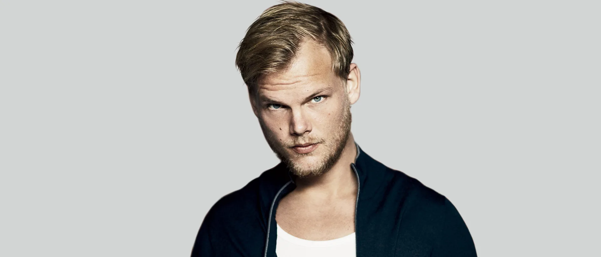

Tim Bergling
Time line of Avicii's life
- 1989 - Avicii, born Tim Bergling, discovers his passion for music at a young age and begins experimenting with electronic music production.
- 2008 - At just 18 years old, Avicii releases his first single, "Manman," gaining attention in the EDM scene.
- 2010 - Avicii's breakout hit "Seek Bromance" becomes an international success, propelling him into the spotlight.
- 2011 - Avicii releases "Levels," a chart-topping anthem that cements his status as one of the leading figures in EDM.
- 2012 - Avicii collaborates with Madonna on her album "MDNA," further solidifying his position in the music industry.
- 2013 - Avicii's single "Wake Me Up" becomes a global phenomenon, blending EDM with country and folk influences.
- 2015 - Avicii releases his second studio album, "Stories," featuring hits like "Waiting for Love" and "The Nights."
- 2016 - Citing health concerns, Avicii announces his retirement from touring, but continues to produce music.
- 2017 - Avicii surprises fans with the release of his EP "Avīci (01)," showcasing his evolving sound.
- 2018 - Tragically, Avicii passes away at the age of 28, leaving behind a legacy of groundbreaking music and unforgettable performances.
Click if you want to visit the Avicii's Website